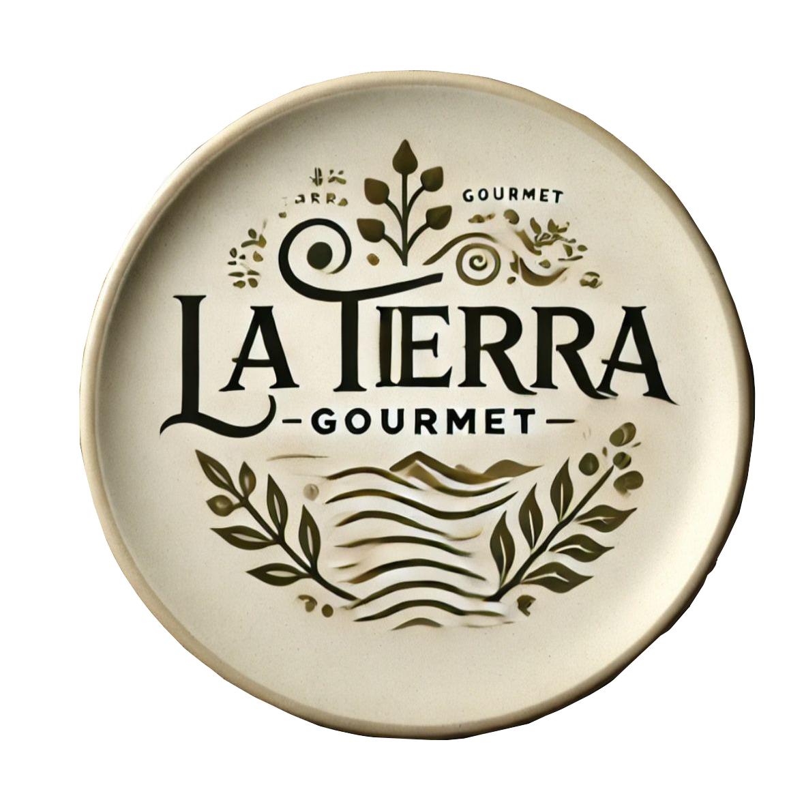
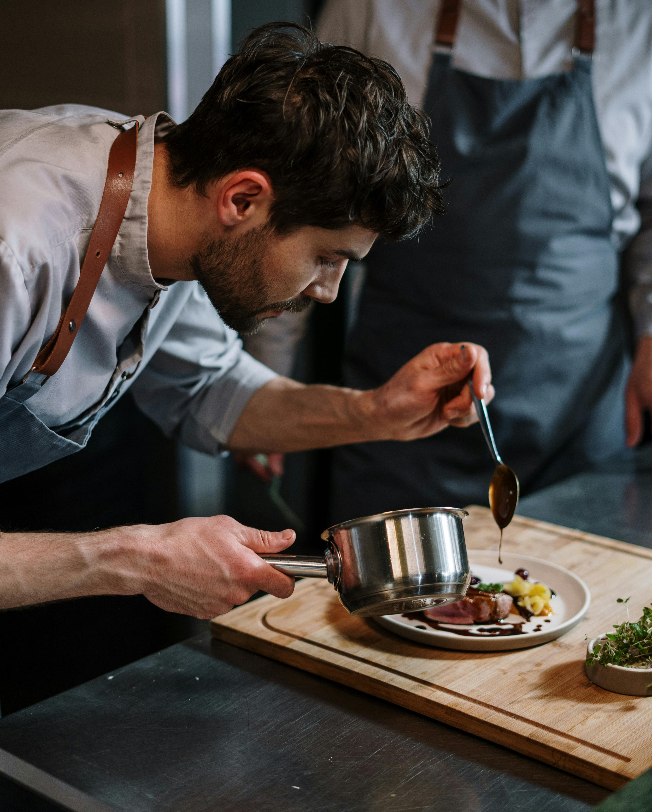

La Tierra Gourmet.




Personaliza tu Menú.
Pescados
- Carabineros
- Calameres
- Chipirones
- Galeras
- Pargo
Carnes
- Conejo
- Solommillo de cerdo
- Carrillada
- Perdiz
- Chuleta de Cordero
El Restaurante La Tierra Gourmet, elabora todos sus platos con productos autóctonos y de proximidad, poniendo en cada elaboración todo su cariño, dedicación y compromiso.
Descrubre nuestra Vinoteca
Encontramos nuestra espectacular bodega con producciones locales e internacionales y ediciones limitadas exclusivas para La tierra Gourmet.
Tanto si quieres un menú con maridaje como si prefieres elegir una botella a la carta, nuestro sumiller te asesorará en todo momento.
| Vino | Nombre | Uva | Aroma |
|---|---|---|---|
| Vino Tinto | Zancuo | Cariñera | Flores y Castaño |
| Barbadillo | Bonarda | Azahar | |
| Vino Blanco | Manzanilla Solear | Verdejo | Futos Rojos |
| Mirlo Blanco | Tempranillo | Denso y Elegante | |
| Vino Rosado Espumoso |
Lunares Rosados | Chardonay | Ligero y vibrante |
| Lume Brut | Macabeo | Frutos Secos Tostados |